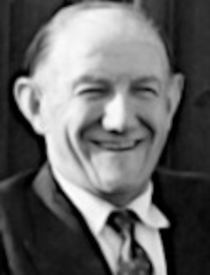
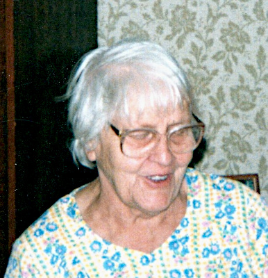

Född 3 dec 1956 i Alseda (F) 1 .
Född 25 jun 1925 i Finland 2 .
Död 11 dec 2001 på Karlslundsvägen 18, Gård 8, Kv Lektorn, Vetlanda, Vetlanda (F) 2 .
Född 29 jan 1933 i Vetlanda (F) 2 .
Död 18 okt 1994 på Karlslundsvägen 18, Gård 8, Kv Lektorn, Vetlanda, Vetlanda (F) 2 .

MF Rutger Natanael Karlsson.Född 5 jun 1899 i Skällingstad, Tåby (E) 3 .
Död 1 jan 1980 i Sjunnen, Vetlanda (F) 2 .
MFF Klas Ferdinand Karlsson.

Född 19 jun 1859 i Holmtebo, Ringarum (E) 4 .
Död 31 jan 1945 i Lunds jägmästaregård, Lund, Drothem (E) 2 .
MFM Hilda Sofia Karlsdotter.
Född 2 feb 1867 i Borrdalen, Fredriksnäs, Gryt (E) 5 .
Död 28 okt 1934 i Lunds jägmästaregård, Lund, Drothem (E) 2 .

MM Märta Ingrid Linnea Karlsson f Österberg.Född 10 dec 1905 i Lammåsa, Alseda (F) 6 .
Död 10 sep 1999 i Holsbybrunn, Alseda (F) 2 .
 Född
20 maj 1979
i Vetlanda (F)
Född
20 maj 1979
i Vetlanda (F)